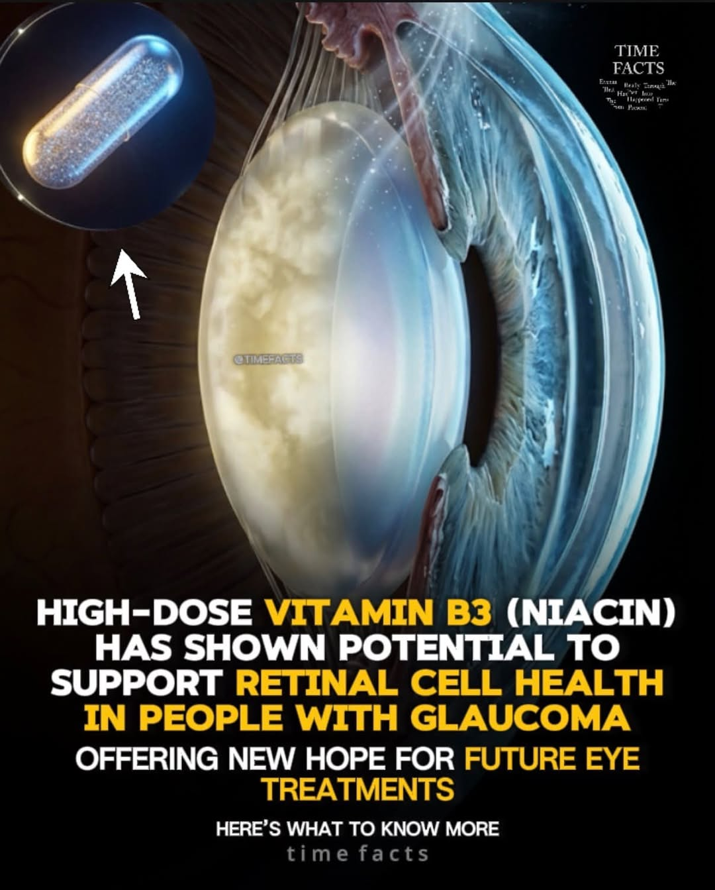

Glaucoma is an incurable disease. Vitamin B3 may help.
Replenishing NAD+ with vitamin B3 may help retinal ganglion cells maintain their energy supply, resist metabolic stress, and remain functional for longer.
A shared summary says replenishing NAD+ with vitamin B3 may help retinal ganglion cells keep their energy supply and function longer in glaucoma. A 2020 randomized clinical trial of 57 people with glaucoma is cited as human evidence. Evidence is early and not specific to heart health.
Glaucoma is an incurable disease. Vitamin B3 may help.
Replenishing NAD+ with vitamin B3 may help retinal ganglion cells maintain their energy supply, resist metabolic stress, and remain functional for longer.
VITAMIN B3 SHOWED PROMISING SIGNS OF PROTECTING RETINAL CELLS IN PEOPLE WITH GLAUCOMA!
Could a common vitamin help protect the delicate nerve cells responsible for sending visual information from the eyes to the brain?
Researchers are investigating nicotinamide, a form of vitamin B3, for its potential to protect retinal ganglion cells — the nerve cells progressively damaged by glaucoma.
WHAT DID THE HUMAN RESEARCH FIND?
A 2020 randomized clinical trial involving 57 people with glaucoma investigated nicotinamide supplementation.
Participants received:
- 1,500 MG DAILY for six weeks.
- 3,000 MG DAILY for another six weeks.
Researchers reported improvements in inner retinal function measured through electroretinography.
Another Phase 2 randomized trial involving 32 participants investigated nicotinamide combined with calcium pyruvate for approximately nine weeks.
The treatment group showed a greater improvement in visual field test locations compared with the placebo group.
HOW MIGHT IT WORK?
Nicotinamide helps the body produce NAD+, a molecule essential for cellular energy production.
Researchers believe replenishing NAD+ may help retinal ganglion cells maintain their energy supply, resist metabolic stress, and remain functional for longer.
IMPORTANT LIMITATION
These findings are encouraging, but they do not prove that vitamin B3 prevents blindness, reverses glaucoma, or restores permanently damaged optic nerves.
The studies were relatively small and short-term. Long-term protection against disease progression has not yet been established.
There is also an important safety concern: the American Academy of Ophthalmology and American Glaucoma Society warn against unsupervised high-dose nicotinamide supplementation. Doses of 3,000 mg daily or higher should only be investigated within closely monitored clinical trials because of potential liver injury.
IMPORTANT: Nicotinamide and niacin are different forms of vitamin B3 and are NOT interchangeable for this research. High-dose niacin should not be substituted.
INSTEAD: Continue prescribed glaucoma treatment and regular eye-pressure and visual-field monitoring. Never replace prescribed eye drops or other glaucoma treatments with supplements.
THE TAKEAWAY: Vitamin B3 research is opening an interesting direction in glaucoma neuroprotection. Early human studies suggest nicotinamide may improve certain measures of retinal function, but larger and longer clinical trials are needed to establish whether it can protect vision over time.
Would you be interested in a future treatment that could help protect the nerve cells responsible for sight?
SOURCES:
- Hui F. et al. “Improvement in inner retinal function in glaucoma with nicotinamide (vitamin B3) supplementation: A crossover randomized clinical trial.” Clinical & Experimental Ophthalmology. 2020. Read the study.
- De Moraes CG. et al. “Nicotinamide and Pyruvate for Neuroenhancement in Open-Angle Glaucoma: A Phase 2 Randomized Clinical Trial.” JAMA Ophthalmology. 2022. Read the study.
- American Glaucoma Society and American Academy of Ophthalmology. “Position Statement on Nicotinamide Use for Glaucoma Neuroprotection.” March 2025. Read the safety guidance.
- “Nicotinamide Supplementation in Glaucoma: A Systematic Review of Human Studies.” Nutrients. September 2026. Read the review.
DISCLAIMER: This content is for educational purposes only and is not medical advice. High-dose nicotinamide is not an approved glaucoma treatment. It may cause serious liver injury, particularly at high doses. Never start high-dose supplementation or change prescribed glaucoma treatment without consulting an ophthalmologist.
#GlaucomaResearch #VitaminB3 #EyeHealth #RetinalProtection #VisionResearch #TimeFacts


Louis notes randomized trials show nicotinamide can reduce certain skin cancers, and early niacin trials are testing glioblastoma, with both likely acting through NAD. The shared analysis stresses the brain-cancer result comes from 15 patients with no control group, while the skin-cancer effect is real but modest.

A randomized Columbia University trial tested high-dose nicotinamide (vitamin B3) with pyruvate in patients being treated for open-angle glaucoma. After about two months the supplement group had significantly more improving visual-field locations than placebo, and Louis notes the mechanism likely involves NAD.

A shared post describes a review by Jonathan Crowston's team proposing 'neurorecovery', the idea that retinal nerve cells in glaucoma may stop working before they die and some may bounce back. Louis ties this to vitamin B3 (nicotinamide) as a possible treatment.

Louis shares an observational study where patients with high eye pressure taking nicotinamide were about two-thirds less likely to be diagnosed with open-angle glaucoma. He cites a small 2020 RCT and a larger ongoing trial, with an NAD mechanism.
Louis notes growing evidence that nicotinic acid, the niacin form used to lower cholesterol, may prevent or treat glaucoma, a disease with no effective treatment that causes irreversible blindness. The mechanism likely involves NAD. Most studies used nicotinic acid, so it is unclear how nicotinamide, NR or NMN compare. This is an eye-health tangent, supported by a video.
A new Nature Metabolism study found whole-blood NAD+ levels stay stable with age across seven independent human cohorts. Louis explains blood NAD mainly reflects recent vitamin B3 intake, so commercial NAD blood tests are not meaningful, while tissue NAD levels may matter but cannot be commercially measured. There is still no convincing clinical evidence NR or NMN supplements slow human aging.